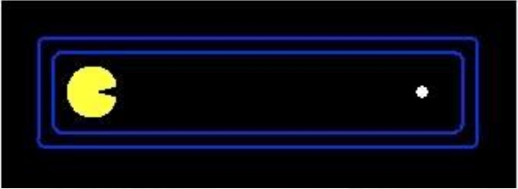
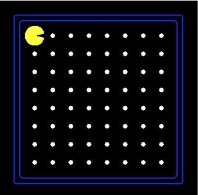
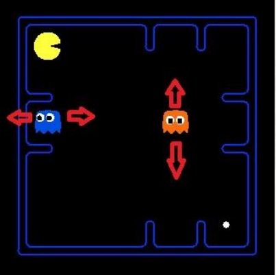
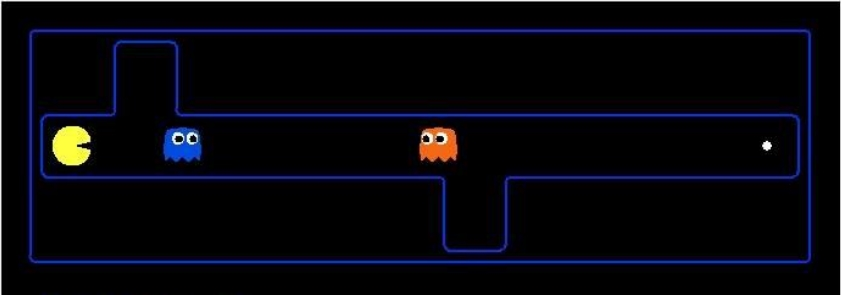
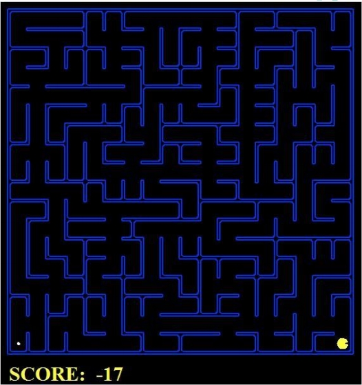
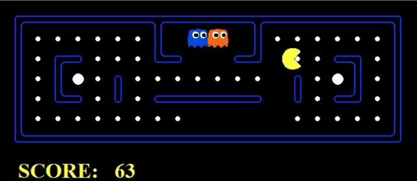
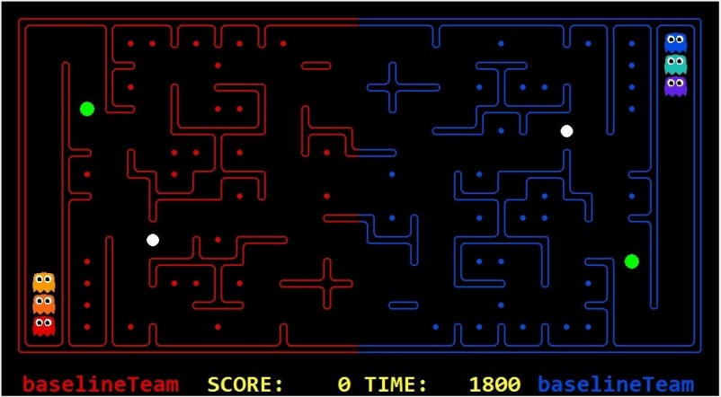

The Pacman Projects

gif made by UC Berkeley CS188
Overview
The Pacman Projects were originally developed with Python 2.7 by UC Berkeley CS188, which were designed for students to practice the foundational AI concepts, such as informed state-space search, probabilistic inference, and reinforcement learning.
As a TA of "Introduction to Artificial Intelligence" in spring 2015, I googled these materials and found it interesting for teaching, so I suggested applying these to our course. However, we didn't use the whole projects. To match the contents in our course, we just chose some of them to modify, and handed them out as assignments.
In addition, we also held a PacmanCTF Tournament using the special version of Pacman modified by Po-Hao Huang and me. All students from this course had to participate as teams. The tournament turned out successfully like an exciting esports competition when the top 8 matched up in class
Assignments
All the assignments in this course are listed below. For more information, click the link of each assignments to download the materials of it. These slides were made and presented by me, except for the project 01, which was by Po-Hao Huang. The source code used in assignments were tested and revised a few to fit the needs in this course.
-
Project 00: Getting Started
- Meet The Pacman Projects.
- Set the environment for it. (Python 2.7, Spyder)
- Play!
-
Project 01: Rule-Based System
- GoEastAgent
- CleanerAgent
- FroggerAgent
- SnakeAgent
-
Project 02: Search
- Depth-First Search (DFS)
- Breadth-First Search (BFS)
- A* Search 
-
Project 03: Multi-Agent Pacman
- Reflex Agent
- Minimax
- Alpha-Beta Pruning
- Evaluation Function 
-
Project: Level Design
- Design a set of rules to make a new version of Pacman.
-
Project: PacmanCTF
- A new version of Pacman mod made by Po-Hao Huang and me.
- Students could use any technique they had learned to compete against one another.
- Round-Robin Qualifiers (offline)
- Top 8: Single Elimination (in class) 
PacmanCTF Tournament
New rules, new item, new map!
-
Tournament
- Round-Robin Qualifiers (offline)
- Top 8: Single Elimination (in class)
-
Features
- 2 Teams, 3 agents per team
- Total 1800 actions (300 per agent)
- If a agent is dead, it would resurrect at the spawning point.
- Agent is ghost on its team's side, while it would transform into a pacman once it crosses the territory.
- Agents could only eat items on the other side.
- Agents could only know the position of enemy's agents when their distance is less than 3.
- Sonar: returns noisy distances, which are values within real distance [-3, +3].
- Flags: gain 2 points per action until this agent dies.
-
Rules
- Environment: Intel i5-430M (2.26GHz, 3MB L3 cache)
- Time limit for initialization: >15 sec, lose
- Time limit for action
- >1 sec: Warning
- >3 sec: Lose
- 3 Warnings: Lose
- If the AI crashes or returns an invalid move, that team loses.
- No multi-threading
- Turn off all outputs